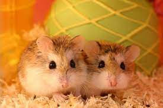

Hamsters
Hamsters are rodents belonging to the subfamily Cricetinae, which contains 19 species classified in seven genera. They have become established as popular small pets. The best-known species of hamster is the golden or Syrian hamster, which is the type most commonly kept as pets.

Is a hamster the right pet for you?
It can be tempting to acquire a hamster on impulse. After all, these little guys are the picture of cuteness: small, round, furry, and inquisitive. A great starter pet, right? Not at all! Here are some important questions to consider before you dive headlong into a relationship.